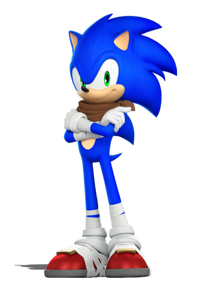
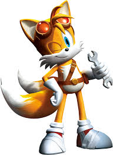
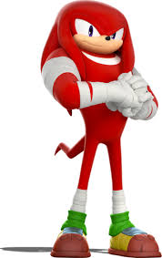
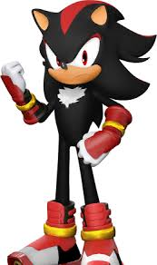
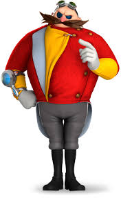
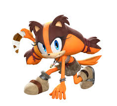

The speedy blue hedgehog gets a new look in this comedy/adventure series that sees him battling a familiar foe with sidekick Tails and pals Knuckles, Amy and Sticks. The gang tries to ward off the evil plans of Dr. Eggman, who is hellbent on taking over the world. Sonic faces regular battles with Eggman's henchmen, including loyal robots Orbot and Cubot, evil interns, and giant, robotic monsters. "Sonic Boom" marks the first CG-animated series featuring the iconic speedster.
SONIC

SONIC THE HEDGEHOG
IS THE LEADER OF SO CALLED
TEAM SONIC AND HE IS KNOWN AS
THE FASTEST HERO IN HIS DAYS
HE HAS A VERY WELL KNOWN ARCH-NEMESIS'
KNOWN AS DR. EGGMAN AND DR. ROBOTNIK.
TAILS

Miles "Tails" Prower is a fictional character in Sega's Sonic the Hedgehog series, and the title character's best friend, sidekick, and most recurring ally. Tails also appears in his own spin-off series, comic books, cartoons, and films. He is the second character to consistently appear by Sonic's side in the series.
AMY
Amy Rose is one of the main characters of the anime series Sonic X and its comic series published by Archie Comics. While usually friendly and caring, if she feels threatened, she can instantly turn into a heavyweight hothead.
KNUCKLES

Knuckles the Echidna is a fictional character in Sega's Sonic the Hedgehog series. He is a red anthropomorphic echidna who is determined and serious, but sometimes gullible. He has the ability to glide and climb up walls, and is a powerful fighter with spiked hands.
SHADOW

Shadow the Hedgehog is a character appearing in Sega's Sonic the Hedgehog video game franchise. Shadow was created by Takashi Iizuka and Shiro Maekawa, and debuted in the series' 2001 installment Sonic Adventure 2.
Eggman

Doctor Ivo "Eggman" Robotnik is a fictional character and the main antagonist of Sega's Sonic the Hedgehog series. His original character designer was Naoto Ohshima, who created him as part of many design choices for Sega's new mascot.
Sticks

Sticks the Badger is one of the main characters in the Sonic Boom series. She is a wacky anthropomorphic jungle badger, the only descendant of Jebediah Badger, and a force of nature in every way.

 Amy Rose is one of the main characters of the anime series Sonic X and its comic series published by Archie Comics. While usually friendly and caring, if she feels threatened, she can instantly turn into a heavyweight hothead.
Amy Rose is one of the main characters of the anime series Sonic X and its comic series published by Archie Comics. While usually friendly and caring, if she feels threatened, she can instantly turn into a heavyweight hothead.